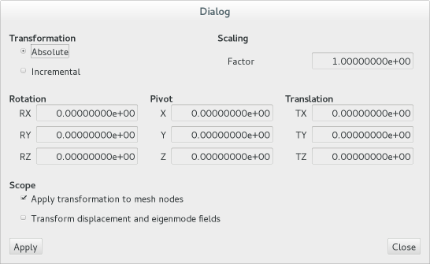

Editing Meshes
Coordinate Transformation
All mesh data can be freely transformed into different coordinate systems using the Transform nodes entry in the Edit menu.

- Absolute indicates that the transformation defined in this dialog is applied to the original, saved geometry, while the Incremental settings allows to chain transformations.
- A Scaling factor can be defined in order to convert node coordinates between unit systems (scope itself is not aware of units). Note that any secondary data which may be contained in a mesh file, such as material data or boundary condition specification, are not affected by scaling node coordinates.
- A rigid-body Rotation around a set Pivot combined with a Translation can also be defined here. As a convention, the rotation is performed in the order RX-RY-RZ, floolowed by the translation.
- Finally, it is possible to apply the transformation either to mesh nodes, displacement and eigenvector fields, or both.
Tip
Use the scaling factor and select displacement/eigenmode fields only in order change the scaling of an eigenvector field.
Mesh Size Reduction
In many cases, result files obtained from computational fluid dynamics are very large. Users concerned with flight mechanics, computation of loads, structural analysis or aeroelasticicty are frequently only interested in a very small subset of this data, namely the values of pressure and friction coefficients or local Mach numbers on the surface. Therefore, volume data can often be erased leading to far smaller files, faster load times and much faster workflow.
From the Components dialog, mesh sections which are not needed (e.g. all sections containig volume elements) can be erased. Note that this eliminates only the corresponding elements, but neither the nodes associated with these elements nor any field values.
The menu entry Remove unsused nodes in the Edit menu searches for nodes that are not referenced by any element and eliminates all of these nodes and all field values belonging to them.